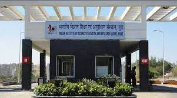

The Indian Institutes of Technology (IITs) are central government owned public technical institutes located across India. They are under the ownership of Ministry of Education, Government of India. They are governed by the Institutes of Technology Act, 1961, which has declared them as Institutes of National Importance and lays down their powers, duties, and framework for governance as the country's premier institutions in the field of Technology.[2][3] The Institutes of Technology Act, 1961 currently lists twenty-three IITs.[4] Each IIT is autonomous, linked to the others through a common council (IIT Council), which oversees their administration. The Minister of Education, India is the ex officio Chairperson of the IIT Council.[5]
1.Indian Institutes of Technology |
2.National Institutes of Technology |
3.Indian Institutes of Science Education and Research |
1.Indian Institutes of Technology
Undergraduate education degrees
The Bachelor of Technology (BTech) degree is the most common undergraduate degree in the IITs in terms of student enrollment,[citation needed] although dual degrees integrating Master of Science or Master of Arts are also offered. The BTech course is based on a 4-year program with eight semesters,[37] while the Dual Degree and Integrated courses are 5-year programs with ten semesters. In all IITs, the first year of BTech and Dual Degree courses are marked by a common course structure for all the students, though in some IITs, a single department introduction related course is also included.[38] The common courses include the basics from most of the departments like Computers, Electronics, Mechanics, Chemistry, Electrical and Physics. At the end of first year (the end of first semester at IIT Madras, IIT Hyderabad, IIT Bhilai, IIT Palakkad, and IIT Roorkee), an option to change departments is given to meritorious students on the basis of their performance in the first two semesters.[39] Few such changes ultimately take place as the criteria for them are usually strict,[39] limited to the most meritorious students.
2.National Institutes of Technology
he National Institutes of Technology (NITs) are the central government-owned-public technical institutes under the ownership of Ministry of Education, Government of India. They are governed by the National Institutes of Technology, Science Education and Research Act, 2007, which declared them as institutions of national importance and lays down their powers, duties, and framework for governance. The act lists thirty-one NITs.[2] Each NIT is autonomous, linked to the others through a common council known as the Council of NITSER, which oversees their administration and all NITs are funded by the Government of India.[3]
3.Indian Institutes of Science Education and Research
(IISERs) are a group of premier public research institutions in India. The institutes were established by the Government of India through the Ministry of Human Resource Development (MHRD) to provide collegiate education in basic sciences coupled with research at the undergraduate level. The institutes were formally established by the Parliament of India through the National Institutes of Technology, Science Education and Research (Amendment) Act, 2010 (an amendment to the National Institutes of Technology Act, 2007).[3][4] Seven IISERs have been established across the country, namely IISER Kolkata in West Bengal, IISER Pune in Maharashtra, IISER Mohali in Punjab, IISER Bhopal in Madhya Pradesh, IISER Thiruvananthapuram in Kerala, IISER Tirupati in Andhra Pradesh, and IISER Berhampur in Odisha.[5][6] All IISERs were declared as Institutes of National Importance by the Parliament of India in 2012,[7] to promote them as leading institutions in the country in the field of basic sciences along with its sister institutes like Indian Institute of Science, Bangalore and National Institute of Science Education and Research, Bhubaneswar. The financial outlay for each IISER is around ₹5 billion (US$63 million) for the first five years of establishment.
| UNIVERSITY SYSTEMS |
|---|
| 1.Indian Institutes of Technology | 2.National Institutes of Technology |
| 3.Indian Institutes of Science Education and Research |